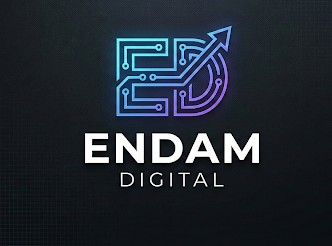

?
En développement
Qui est le vrai ?
Une IA apprend à écrire comme toi. Tes amis doivent retrouver ta vraie réponse.
Le jeu de soirée où l'on se méfie de tout le monde, surtout de soi-même.
Me prévenir au lancement
Endam Digital, c'est mon atelier numérique : des projets web qui me passionnent, du pronostic foot au grimoire de minuit.
Clique, explore, reviens.
Le bot de pronostics Ligue 1 et Ligue des Champions : tu pronostiques, tu marques des points, tu défies tes potes en duel et tu grimpes au classement.
Ils ne veulent pas que tu lises ce blog. La parodie qui démonte les théories du complot en les poussant jusqu'à l'absurde, façon tabloïd.
Un Livre des Ombres à feuilleter : des dizaines de sorts et de rituels, les 8 sabbats, la lune du jour, le tarot et quatre mille ans d'histoire des sorcières.
Aussi sur Endam Digital : mon avis honnête sur Honeygain, l'appli qui rémunère ta bande passante → (lien de parrainage)
Mis à jour automatiquement.
Les huit fêtes de la roue de l'année, leurs rituels, leurs recettes et leur histoire.
Chaque soir, la phase de la lune et les sorts qui vont avec.
Deux jeux. Aucun spoiler. Enfin, presque.
Endam Digital est un atelier numérique indépendant. Chaque projet part d'une envie simple : construire quelque chose d'utile, de drôle ou d'intrigant, le mettre en ligne vite, puis l'améliorer au fil des retours. Des idées testées pour de vrai.